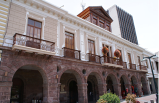
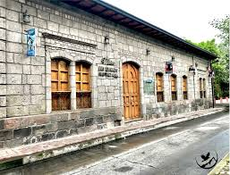
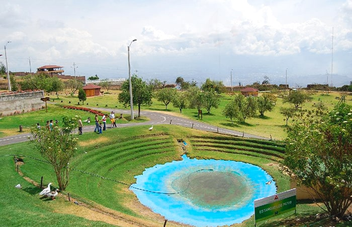
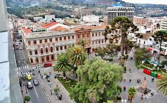
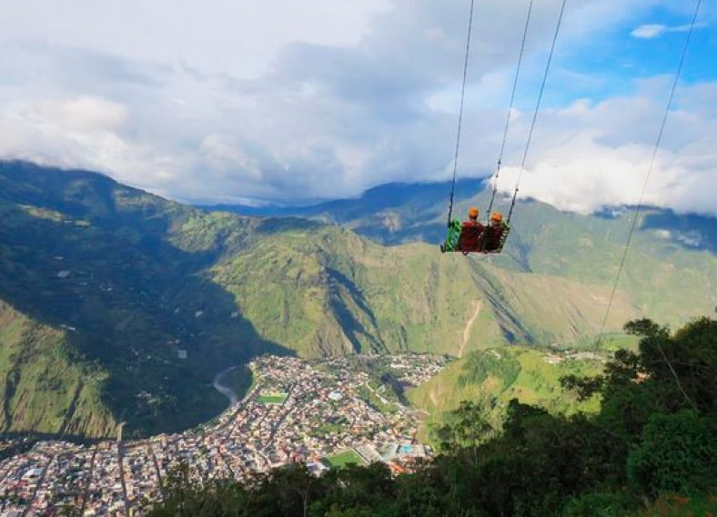
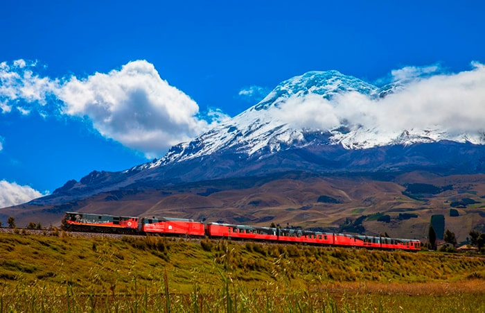
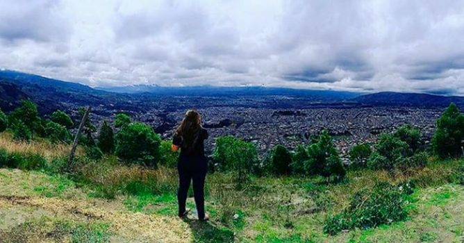

Esta obra arquitectónica de estilo moderno fue construida en 1954 en reemplazo de la Iglesia Matriz, destruida en el terremoto de 1949. Es la edificación de mayor altura en Ambato y representa su progreso y renacer. Ubicada en el corazón de la ciudad, se observa desde distintos puntos, con cúpulas enormes, vitrales de apóstoles, murales decorativos y juegos de luces nocturnos.
Con estilo republicano, esta majestuosa construcción de piedra fue levantada en 1900 y es ahora Patrimonio Cultural. Alberga vestigios arqueológicos y obras originales de Luis A. Martínez y Oswaldo Viteri, entre otros artistas destacados.
Ubicado en la antigua casa del expresidente, este museo exhibe obras plásticas de relevancia nacional y promueve el arte mediante eventos culturales y teatrales.
A 20 minutos de la vía Ambato-Quisapincha, este parque de 57 hectáreas es gratuito y propiedad del gobierno provincial. Es ideal para actividades recreativas, picnic y camping. Cuenta con jardines, lagunas, huertos, juegos infantiles, granja agroecológica y centros de souvenirs.
Ubicado en pleno centro de Ambato, este parque combina el estilo tradicional con arte urbano. Destacan sus letras gigantes con la palabra “Ambato”, ideales para fotos. Es un lugar limpio, tranquilo y muy concurrido por turistas.
Este columpio extremo se encuentra en Baños de Agua Santa, a solo 20 minutos del centro. Es una experiencia llena de adrenalina y vistas espectaculares. Accesible y seguro, es una de las actividades favoritas para aventureros.
Un viaje escénico que inicia en Ambato y termina en El Boliche. A lo largo del trayecto se observan volcanes, bosques de eucalipto y paisajes andinos. Incluye alimentación, guías y transporte desde Quito. Ideal para disfrutar en familia o con amigos.
Mirador natural perfecto para caminatas y contemplación. Ofrece una vista panorámica de Ambato desde lo alto, en un ambiente natural y tranquilo.
